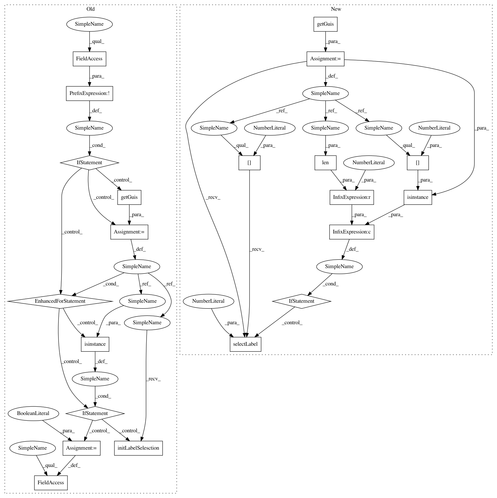

94b3eec96f2da7bfc64cd32606429259a64b8ce2,ilastik/workflows/carving/carvingApplet.py,CarvingApplet,getMultiLaneGui,#CarvingApplet#,50
Before Change
the current layer stack. Which is only the case when the gui objects LayerViewerGui.updateAllLayers run at least once after object init.
gui_obj = super(LabelingApplet, self).getMultiLaneGui()
if not self._label_was_initialized:
for gui in gui_obj.getGuis():
if isinstance(gui, CarvingGui):
gui.initLabelSelesction()
self._label_was_initialized = True
return gui_obj
@property
def dataSerializers(self):
After Change
the current layer stack. Which is only the case when the gui objects LayerViewerGui.updateAllLayers run at least once after object init.
multi_lane_gui = super(LabelingApplet, self).getMultiLaneGui()
guis = multi_lane_gui.getGuis()
if len(guis)>0 and isinstance(guis[0], CarvingGui):
guis[0].selectLabel(0)
return multi_lane_gui
@property
def dataSerializers(self):
In pattern: SUPERPATTERN
Frequency: 4
Non-data size: 21
Instances
Project Name: ilastik/ilastik
Commit Name: 94b3eec96f2da7bfc64cd32606429259a64b8ce2
Time: 2018-10-12
Author: hiltpa@gmail.com
File Name: ilastik/workflows/carving/carvingApplet.py
Class Name: CarvingApplet
Method Name: getMultiLaneGui
Project Name: ilastik/ilastik
Commit Name: 94b3eec96f2da7bfc64cd32606429259a64b8ce2
Time: 2018-10-12
Author: hiltpa@gmail.com
File Name: ilastik/applets/pixelClassification/pixelClassificationApplet.py
Class Name: PixelClassificationApplet
Method Name: getMultiLaneGui
Project Name: ilastik/ilastik
Commit Name: 94b3eec96f2da7bfc64cd32606429259a64b8ce2
Time: 2018-10-12
Author: hiltpa@gmail.com
File Name: ilastik/applets/counting/countingApplet.py
Class Name: CountingApplet
Method Name: getMultiLaneGui
Project Name: ilastik/ilastik
Commit Name: 94b3eec96f2da7bfc64cd32606429259a64b8ce2
Time: 2018-10-12
Author: hiltpa@gmail.com
File Name: ilastik/applets/objectClassification/objectClassificationApplet.py
Class Name: ObjectClassificationApplet
Method Name: getMultiLaneGui
Project Name: ilastik/ilastik
Commit Name: 94b3eec96f2da7bfc64cd32606429259a64b8ce2
Time: 2018-10-12
Author: hiltpa@gmail.com
File Name: ilastik/workflows/carving/carvingApplet.py
Class Name: CarvingApplet
Method Name: getMultiLaneGui